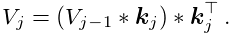
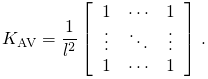
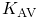
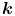
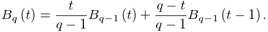
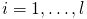
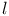

Averaging (Box) filter
Applying an averaging filter (also known as mean or box filter) results in an image in which the value of each pixel is equal to the average intensity of pixels from the input image in a given neighborhood. Filtering can be defined as a convolution of the image with a kernel given by an  matrix containing equal entries that sum to one, thus
|  |
Kernel  is separable and the vector  (see convolution with separable kernels) can be composed from values , where . The kernel size  is a user-specified parameter.
Threshold for approximate localization of molecules
The threshold value can be specified by users as an expression combining mathematical functions and operators with variables based on the current raw or filtered image. Variables provided by this filter are:
| Box.I | current raw input image |
| Box.F | corresponding filtered image |
Generated on Sun Oct 4 04:17:58 2015 by LaTeXML ![[LOGO]]()